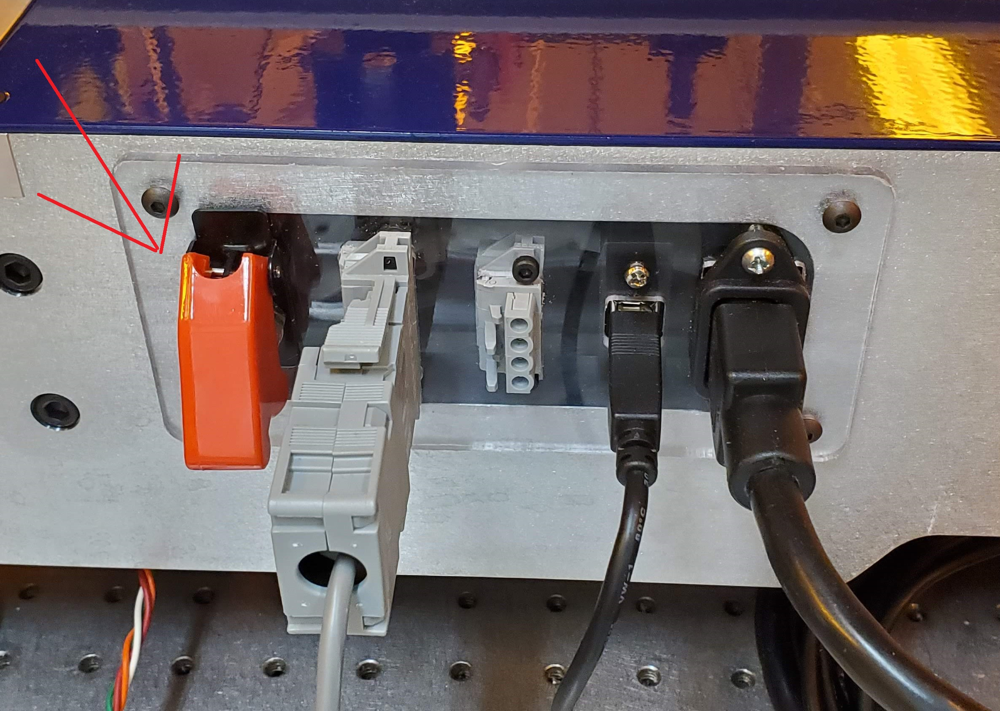
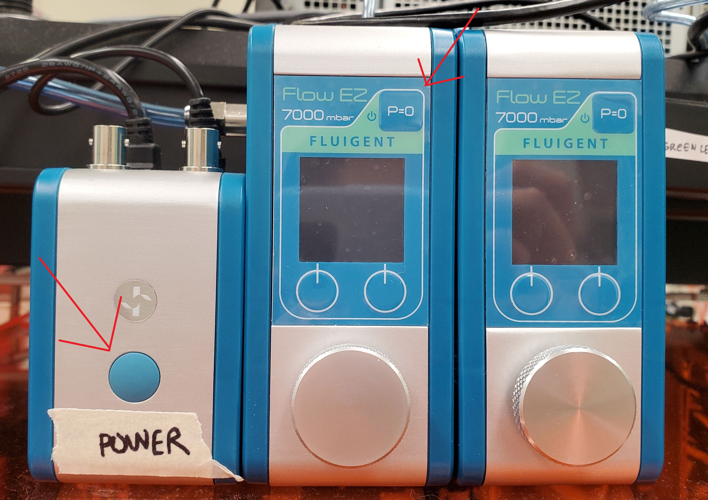
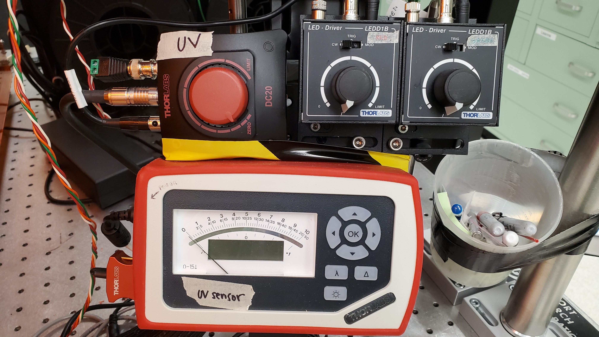

| 1. Turn on the computer. |
|
| 2. Turn on the Shopbot using the switch in the back. |
 |
| 3. Check that the pressure source is on. Because this instrument shares a pressure line with one of the rheometers, this line should remain on. |
![The air source comes from a pipe sticking from the ground underneath the Shopbot table. The pipe has a yellow handle. When the handle is up, the pressure is on. When it is forward, the pressure is off. The pipe connects to a regulator that should be at 7 bar. After the regulator, the line splits. One line comes forward towards you through another regulator, which goes to the rheometer. Another line splits off to the side as soft tubing, which then winds up the table to another air dryer to the Fluigent.](img/air_source.jpg) |
| 4. Turn on the Fluigent using the on/off button. |
 |
| 5. Turn on the imaging light source(s). |
 |
| 6. Install the ink reservoir and nozzle. |
|
| 7. Open the Pylon software and adjust the camera exposure and white balance. Close the Pylon software. |
|
| 8. Launch the python GUI. In Miniconda, type: python "MyGithubPath\ShopbotPyQt\pythonGUI\sbgui.py", replacing "MyGitHubPath" with your full github path. |
|
| 9. Calibrate flow rates using the calibration tool. |
|
| 10. Install a printing bath or substrate. Zero the gantry. Load shopbot file into the queue. Print. Repeat. |
|